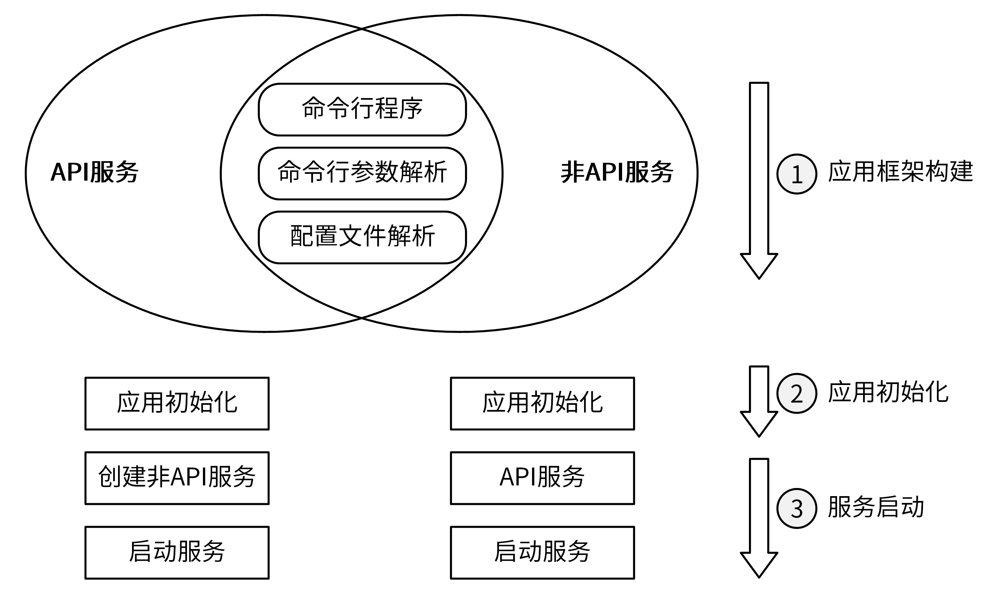
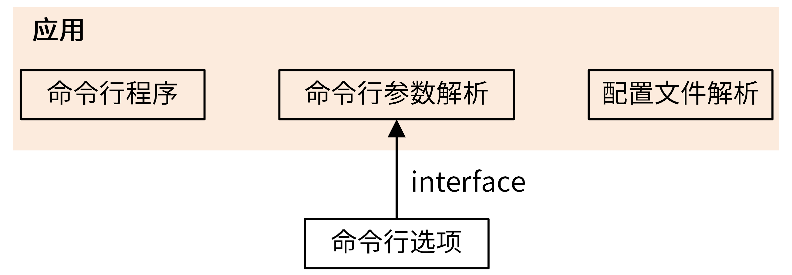

- 00 开篇词 从 0 开始搭建一个企业级 Go 应用.md.html
- 01 IAM系统概述：我们要实现什么样的 Go 项目？.md.html
- 02 环境准备：如何安装和配置一个基本的 Go 开发环境？.md.html
- 03 项目部署：如何快速部署 IAM 系统？.md.html
- 04 规范设计（上）：项目开发杂乱无章，如何规范？.md.html
- 05 规范设计（下）：commit 信息风格迥异、难以阅读，如何规范？.md.html
- 06 目录结构设计：如何组织一个可维护、可扩展的代码目录？.md.html
- 07 工作流设计：如何设计合理的多人开发模式？.md.html
- 08 研发流程设计（上）：如何设计 Go 项目的开发流程？.md.html
- 09 研发流程设计（下）：如何管理应用的生命周期？.md.html
- 10 设计方法：怎么写出优雅的 Go 项目？.md.html
- 11 设计模式：Go常用设计模式概述.md.html
- 12 API 风格（上）：如何设计RESTful API？.md.html
- 13 API 风格（下）：RPC API介绍.md.html
- 14 项目管理：如何编写高质量的Makefile？.md.html
- 15 研发流程实战：IAM项目是如何进行研发流程管理的？.md.html
- 16 代码检查：如何进行静态代码检查？.md.html
- 17 API 文档：如何生成 Swagger API 文档 ？.md.html
- 18 错误处理（上）：如何设计一套科学的错误码？.md.html
- 19 错误处理（下）：如何设计错误包？.md.html
- 20 日志处理（上）：如何设计日志包并记录日志？.md.html
- 21 日志处理（下）：手把手教你从 0 编写一个日志包.md.html
- 22 应用构建三剑客：Pflag、Viper、Cobra 核心功能介绍.md.html
- 23 应用构建实战：如何构建一个优秀的企业应用框架？.md.html
- 24 Web 服务：Web 服务核心功能有哪些，如何实现？.md.html
- 25 认证机制：应用程序如何进行访问认证？.md.html
- 26 IAM项目是如何设计和实现访问认证功能的？.md.html
- 27 权限模型：5大权限模型是如何进行资源授权的？.md.html
- 28 控制流（上）：通过iam-apiserver设计，看Web服务的构建.md.html
- 29 控制流（下）：iam-apiserver服务核心功能实现讲解.md.html
- 30 ORM：CURD 神器 GORM 包介绍及实战.md.html
- 31 数据流：通过iam-authz-server设计，看数据流服务的设计.md.html
- 32 数据处理：如何高效处理应用程序产生的数据？.md.html
- 33 SDK 设计（上）：如何设计出一个优秀的 Go SDK？.md.html
- 34 SDK 设计（下）：IAM项目Go SDK设计和实现.md.html
- 35 效率神器：如何设计和实现一个命令行客户端工具？.md.html
- 36 代码测试（上）：如何编写 Go 语言单元测试和性能测试用例？.md.html
- 37 代码测试（下）：Go 语言其他测试类型及 IAM 测试介绍.md.html
- 38 性能分析（上）：如何分析 Go 语言代码的性能？.md.html
- 39 性能分析（下）：API Server性能测试和调优实战.md.html
- 40 软件部署实战（上）：部署方案及负载均衡、高可用组件介绍.md.html
- 41 软件部署实战（中）：IAM 系统生产环境部署实战.md.html
- 42 软件部署实战（下）：IAM系统安全加固、水平扩缩容实战.md.html
- 43 技术演进（上）：虚拟化技术演进之路.md.html
- 44 技术演进（下）：软件架构和应用生命周期技术演进之路.md.html
- 45 基于Kubernetes的云原生架构设计.md.html
- 46 如何制作Docker镜像？.md.html
- 47 如何编写Kubernetes资源定义文件？.md.html
- 48 IAM 容器化部署实战.md.html
- 49 服务编排（上）：Helm服务编排基础知识.md.html
- 50 服务编排（下）：基于Helm的服务编排部署实战.md.html
- 51 基于 GitHub Actions 的 CI 实战.md.html
- 特别放送 Go Modules依赖包管理全讲.md.html
- 特别放送 Go Modules实战.md.html
- 特别放送 IAM排障指南.md.html
- 特别放送 分布式作业系统设计和实现.md.html
- 特别放送 给你一份Go项目中最常用的Makefile核心语法.md.html
- 特别放送 给你一份清晰、可直接套用的Go编码规范.md.html
- 直播加餐 如何从小白进阶成 Go 语言专家？.md.html
- 结束语 如何让自己的 Go 研发之路走得更远？.md.html
- 捐赠
23 应用构建实战：如何构建一个优秀的企业应用框架？
你好，我是孔令飞。今天我们来聊聊开发应用必须要做的那些事儿。
应用开发是软件开发工程师最核心的工作。在我这 7 年的 Go 开发生涯中，我构建了大大小小不下 50 个后端应用，深谙其中的痛点，比如：
- 重复造轮子。同样的功能却每次都要重新开发，浪费非常多的时间和精力不说，每次实现的代码质量更是参差不齐。
- 理解成本高。相同的功能，有 N 个服务对应着 N 种不同的实现方式，如果功能升级，或者有新成员加入，都可能得重新理解 N 次。
- 功能升级的开发工作量大。一个应用由 N 个服务组成，如果要升级其中的某个功能，你需要同时更新 N 个服务的代码。
想要解决上面这些问题，一个比较好的思路是：找出相同的功能，然后用一种优雅的方式去实现它，并通过 Go 包的形式，供所有的服务使用。
如果你也面临这些问题，并且正在寻找解决方法，那么你可以认真学习今天这一讲。我会带你找出服务的通用功能，并给出优雅的构建方式，帮助你一劳永逸地解决这些问题。在提高开发效率的同时，也能提高你的代码质量。
接下来，我们先来分析并找出 Go 服务通用的功能。
构建应用的基础：应用的三大基本功能
我们目前见到的 Go 后端服务，基本上可以分为 API 服务和非 API 服务两类。
- API 服务：通过对外提供 HTTP/RPC 接口来完成指定的功能。比如订单服务，通过调用创建订单的 API 接口，来创建商品订单。
- 非 API 服务：通过监听、定时运行等方式，而不是通过 API 调用来完成某些任务。比如数据处理服务，定时从 Redis 中获取数据，处理后存入后端存储中。再比如消息处理服务，监听消息队列（如 NSQ/Kafka/RabbitMQ），收到消息后进行处理。
对于 API 服务和非 API 服务来说，它们的启动流程基本一致，都可以分为三步：
- 应用框架的构建，这是最基础的一步。
- 应用初始化。
- 服务启动。
如下图所示：

图中，命令行程序、命令行参数解析和配置文件解析，是所有服务都需要具备的功能，这些功能有机结合到一起，共同构成了应用框架。
所以，我们要构建的任何一个应用程序，至少要具备命令行程序、命令行参数解析和配置文件解析这 3 种功能。
- 命令行程序：用来启动一个应用。命令行程序需要实现诸如应用描述、help、参数校验等功能。根据需要，还可以实现命令自动补全、打印命令行参数等高级功能。
- 命令行参数解析：用来在启动时指定应用程序的命令行参数，以控制应用的行为。
- 配置文件解析：用来解析不同格式的配置文件。
另外，上述 3 类功能跟业务关系不大，可以抽象成一个统一的框架。应用初始化、创建 API/非 API 服务、启动服务，跟业务联系比较紧密，难以抽象成一个统一的框架。
iam-apiserver 是如何构建应用框架的？
这里，我通过讲解 iam-apiserver 的应用构建方式，来给你讲解下如何构建应用。iam-apiserver 程序的 main 函数位于 apiserver.go 文件中，其构建代码可以简化为：
import (
...
"github.com/marmotedu/iam/internal/apiserver"
"github.com/marmotedu/iam/pkg/app"
)
func main() {
...
apiserver.NewApp("iam-apiserver").Run()
}
const commandDesc = `The IAM API server validates and configures data ...`
// NewApp creates a App object with default parameters.
func NewApp(basename string) *app.App {
opts := options.NewOptions()
application := app.NewApp("IAM API Server",
basename,
app.WithOptions(opts),
app.WithDescription(commandDesc),
app.WithDefaultValidArgs(),
app.WithRunFunc(run(opts)),
)
return application
}
func run(opts *options.Options) app.RunFunc {
return func(basename string) error {
log.Init(opts.Log)
defer log.Flush()
cfg, err := config.CreateConfigFromOptions(opts)
if err != nil {
return err
}
return Run(cfg)
}
}
可以看到，我们是通过调用包 github.com/marmotedu/iam/pkg/app 来构建应用的。也就是说，我们将构建应用的功能抽象成了一个 Go 包，通过 Go 包可以提高代码的封装性和复用性。iam-authz-server 和 iam-pump 组件也都是通过 github.com/marmotedu/iam/pkg/app 来构建应用的。
构建应用的流程也很简单，只需要创建一个 application 实例即可：
opts := options.NewOptions()
application := app.NewApp("IAM API Server",
basename,
app.WithOptions(opts),
app.WithDescription(commandDesc),
app.WithDefaultValidArgs(),
app.WithRunFunc(run(opts)),
)
在创建应用实例时，我传入了下面这些参数。
- IAM API Server：应用的简短描述。
- basename：应用的二进制文件名。
- opts：应用的命令行选项。
- commandDesc：应用的详细描述。
- run(opts)：应用的启动函数，初始化应用，并最终启动 HTTP 和 GRPC Web 服务。
创建应用时，你还可以根据需要来配置应用实例，比如 iam-apiserver 组件在创建应用时，指定了 WithDefaultValidArgs 来校验命令行非选项参数的默认校验逻辑。
可以看到，iam-apiserver 通过简单的几行代码，就创建出了一个应用。之所以这么方便，是因为应用框架的构建代码都封装在了 github.com/marmotedu/iam/pkg/app 包中。接下来，我们来重点看下 github.com/marmotedu/iam/pkg/app 包是如何实现的。为了方便描述，我在下文中统称为 App 包。
App 包设计和实现
我们先来看下 App 包目录下的文件：
[colin@dev iam]$ ls pkg/app/
app.go cmd.go config.go doc.go flag.go help.go options.go
pkg/app 目录下的 5 个主要文件是 app.go、cmd.go、config.go、flag.go、options.go，分别实现了应用程序框架中的应用、命令行程序、命令行参数解析、配置文件解析和命令行选项 5 个部分，具体关系如下图所示：

我再来解释下这张图。应用由命令行程序、命令行参数解析、配置文件解析三部分组成，命令行参数解析功能通过命令行选项来构建，二者通过接口解耦合：
type CliOptions interface {
// AddFlags adds flags to the specified FlagSet object.
// AddFlags(fs *pflag.FlagSet)
Flags() (fss cliflag.NamedFlagSets)
Validate() []error
}
通过接口，应用可以定制自己独有的命令行参数。接下来，我们再来看下如何具体构建应用的每一部分。
第 1 步：构建应用
APP 包提供了 NewApp 函数来创建一个应用：
func NewApp(name string, basename string, opts ...Option) *App {
a := &App{
name: name,
basename: basename,
}
for _, o := range opts {
o(a)
}
a.buildCommand()
return a
}
NewApp 中使用了设计模式中的选项模式，来动态地配置 APP，支持 WithRunFunc、WithDescription、WithValidArgs 等选项。
第 2 步：命令行程序构建
这一步，我们会使用 Cobra 包来构建应用的命令行程序。
NewApp 最终会调用 buildCommand 方法来创建 Cobra Command 类型的命令，命令的功能通过指定 Cobra Command 类型的各个字段来实现。通常可以指定：Use、Short、Long、SilenceUsage、SilenceErrors、RunE、Args 等字段。
在 buildCommand 函数中，也会根据应用的设置添加不同的命令行参数，例如：
if !a.noConfig {
addConfigFlag(a.basename, namedFlagSets.FlagSet("global"))
}
上述代码的意思是：如果我们设置了 noConfig=false，那么就会在命令行参数 global 分组中添加以下命令行选项：
-c, --config FILE Read configuration from specified FILE, support JSON, TOML, YAML, HCL, or Java properties formats.
为了更加易用和人性化，命令还具有如下 3 个功能。
- 帮助信息：执行
-h/--help时，输出的帮助信息。通过cmd.SetHelpFunc函数可以指定帮助信息。 - 使用信息（可选）：当用户提供无效的标志或命令时，向用户显示“使用信息”。通过
cmd.SetUsageFunc函数，可以指定使用信息。如果不想每次输错命令打印一大堆 usage 信息，你可以通过设置SilenceUsage: true来关闭掉 usage。 - 版本信息：打印应用的版本。知道应用的版本号，对故障排查非常有帮助。通过
verflag.AddFlags可以指定版本信息。例如，App 包通过github.com/marmotedu/component-base/pkg/version指定了以下版本信息：
$ ./iam-apiserver --version
gitVersion: v0.3.0
gitCommit: ccc31e292f66e6bad94efb1406b5ced84e64675c
gitTreeState: dirty
buildDate: 2020-12-17T12:24:37Z
goVersion: go1.15.1
compiler: gc
platform: linux/amd64
$ ./iam-apiserver --version=raw
version.Info{GitVersion:"v0.3.0", GitCommit:"ccc31e292f66e6bad94efb1406b5ced84e64675c", GitTreeState:"dirty", BuildDate:"2020-12-17T12:24:37Z", GoVersion:"go1.15.1", Compiler:"gc", Platform:"linux/amd64"}
接下来，再来看下应用需要实现的另外一个重要功能，也就是命令行参数解析。
第 3 步：命令行参数解析
App 包在构建应用和执行应用两个阶段来实现命令行参数解析。
我们先看构建应用这个阶段。App 包在 buildCommand 方法中通过以下代码段，给应用添加了命令行参数：
var namedFlagSets cliflag.NamedFlagSets
if a.options != nil {
namedFlagSets = a.options.Flags()
fs := cmd.Flags()
for _, f := range namedFlagSets.FlagSets {
fs.AddFlagSet(f)
}
...
}
if !a.noVersion {
verflag.AddFlags(namedFlagSets.FlagSet("global"))
}
if !a.noConfig {
addConfigFlag(a.basename, namedFlagSets.FlagSet("global"))
}
globalflag.AddGlobalFlags(namedFlagSets.FlagSet("global"), cmd.Name())
namedFlagSets 中引用了 Pflag 包，上述代码先通过 a.options.Flags() 创建并返回了一批 FlagSet，a.options.Flags() 函数会将 FlagSet 进行分组。通过一个 for 循环，将 namedFlagSets 中保存的 FlagSet 添加到 Cobra 应用框架中的 FlagSet 中。
buildCommand 还会根据应用的配置，选择性添加一些 flag。例如，在 global 分组下添加 --version 和 --config 选项。
执行 -h 打印命令行参数如下：
..
Usage:
iam-apiserver [flags]
Generic flags:
--server.healthz Add self readiness check and install /healthz router. (default true)
--server.max-ping-count int The max number of ping attempts when server failed to startup. (default 3)
...
Global flags:
-h, --help help for iam-apiserver
--version version[=true] Print version information and quit.
这里有两个技巧，你可以借鉴。
第一个技巧，将 flag 分组。
一个大型系统，可能会有很多个 flag，例如 kube-apiserver 就有 200 多个 flag，这时对 flag 分组就很有必要了。通过分组，我们可以很快地定位到需要的分组及该分组具有的标志。例如，我们想了解 MySQL 有哪些标志，可以找到 MySQL 分组：
Mysql flags:
--mysql.database string
Database name for the server to use.
--mysql.host string
MySQL service host address. If left blank, the following related mysql options will be ignored. (default "127.0.0.1:3306")
--mysql.log-mode int
Specify gorm log level. (default 1)
...
第二个技巧，flag 的名字带有层级关系。这样不仅可以知道该 flag 属于哪个分组，而且能够避免重名。例如：
$ ./iam-apiserver -h |grep host
--mysql.host string MySQL service host address. If left blank, the following related mysql options will be ignored. (default "127.0.0.1:3306")
--redis.host string Hostname of your Redis server. (default "127.0.0.1")
对于 MySQL 和 Redis， 都可以指定相同的 host 标志，通过 --mysql.host 也可以知道该 flag 隶属于 mysql 分组，代表的是 MySQL 的 host。
我们再看应用执行阶段。这时会通过 viper.Unmarshal，将配置 Unmarshal 到 Options 变量中。这样我们就可以使用 Options 变量中的值，来执行后面的业务逻辑。
我们传入的 Options 是一个实现了 CliOptions 接口的结构体变量，CliOptions 接口定义为：
type CliOptions interface {
Flags() (fss cliflag.NamedFlagSets)
Validate() []error
}
因为 Options 实现了 Validate 方法，所以我们就可以在应用框架中调用 Validate 方法来校验参数是否合法。另外，我们还可以通过以下代码，来判断选项是否可补全和打印：如果可以补全，则补全选项；如果可以打印，则打印选项的内容。实现代码如下：
func (a *App) applyOptionRules() error {
if completeableOptions, ok := a.options.(CompleteableOptions); ok {
if err := completeableOptions.Complete(); err != nil {
return err
}
}
if errs := a.options.Validate(); len(errs) != 0 {
return errors.NewAggregate(errs)
}
if printableOptions, ok := a.options.(PrintableOptions); ok && !a.silence {
log.Infof("%v Config: `%s`", progressMessage, printableOptions.String())
}
return nil
}
通过配置补全，可以确保一些重要的配置项具有默认值，当这些配置项没有被配置时，程序也仍然能够正常启动。一个大型项目，有很多配置项，我们不可能对每一个配置项都进行配置。所以，给重要配置项设置默认值，就显得很重要了。
这里，我们来看下 iam-apiserver 提供的 Validate 方法：
func (s *ServerRunOptions) Validate() []error {
var errs []error
errs = append(errs, s.GenericServerRunOptions.Validate()...)
errs = append(errs, s.GrpcOptions.Validate()...)
errs = append(errs, s.InsecureServing.Validate()...)
errs = append(errs, s.SecureServing.Validate()...)
errs = append(errs, s.MySQLOptions.Validate()...)
errs = append(errs, s.RedisOptions.Validate()...)
errs = append(errs, s.JwtOptions.Validate()...)
errs = append(errs, s.Log.Validate()...)
errs = append(errs, s.FeatureOptions.Validate()...)
return errs
}
可以看到，每个配置分组，都实现了 Validate() 函数，对自己负责的配置进行校验。通过这种方式，程序会更加清晰。因为只有配置提供者才更清楚如何校验自己的配置项，所以最好的做法是将配置的校验放权给配置提供者（分组）。
第 4 步：配置文件解析
在 buildCommand 函数中，通过addConfigFlag调用，添加了 -c, --config FILE 命令行参数，用来指定配置文件：
addConfigFlag(a.basename, namedFlagSets.FlagSet("global"))
addConfigFlag函数代码如下：
func addConfigFlag(basename string, fs *pflag.FlagSet) {
fs.AddFlag(pflag.Lookup(configFlagName))
viper.AutomaticEnv()
viper.SetEnvPrefix(strings.Replace(strings.ToUpper(basename), "-", "_", -1))
viper.SetEnvKeyReplacer(strings.NewReplacer(".", "_", "-", "_"))
cobra.OnInitialize(func() {
if cfgFile != "" {
viper.SetConfigFile(cfgFile)
} else {
viper.AddConfigPath(".")
if names := strings.Split(basename, "-"); len(names) > 1 {
viper.AddConfigPath(filepath.Join(homedir.HomeDir(), "."+names[0]))
}
viper.SetConfigName(basename)
}
if err := viper.ReadInConfig(); err != nil {
_, _ = fmt.Fprintf(os.Stderr, "Error: failed to read configuration file(%s): %v\n", cfgFile, err)
os.Exit(1)
}
})
}
addConfigFlag 函数中，指定了 Cobra Command 在执行命令之前，需要做的初始化工作：
func() {
if cfgFile != "" {
viper.SetConfigFile(cfgFile)
} else {
viper.AddConfigPath(".")
if names := strings.Split(basename, "-"); len(names) > 1 {
viper.AddConfigPath(filepath.Join(homedir.HomeDir(), "."+names[0]))
}
viper.SetConfigName(basename)
}
if err := viper.ReadInConfig(); err != nil {
_, _ = fmt.Fprintf(os.Stderr, "Error: failed to read configuration file(%s): %v\n", cfgFile, err)
os.Exit(1)
}
}
上述代码实现了以下功能：
- 如果命令行参数中没有指定配置文件的路径，则加载默认路径下的配置文件，通过 viper.AddConfigPath、viper.SetConfigName 来设置配置文件搜索路径和配置文件名。通过设置默认的配置文件，可以使我们不用携带任何命令行参数，即可运行程序。
- 支持环境变量，通过 viper.SetEnvPrefix 来设置环境变量前缀，避免跟系统中的环境变量重名。通过 viper.SetEnvKeyReplacer 重写了 Env 键。
上面，我们给应用添加了配置文件的命令行参数，并设置在命令执行前，读取配置文件。在命令执行时，会将配置文件中的配置项和命令行参数绑定，并将 Viper 的配置 Unmarshal 到传入的 Options 中：
if !a.noConfig {
if err := viper.BindPFlags(cmd.Flags()); err != nil {
return err
}
if err := viper.Unmarshal(a.options); err != nil {
return err
}
}
Viper 的配置是命令行参数和配置文件配置 merge 后的配置。如果在配置文件中指定了 MySQL 的 host 配置，并且也同时指定了 --mysql.host 参数，则会优先取命令行参数设置的值。这里需要注意的是，不同于 YAML 格式的分级方式，配置项是通过点号 . 来分级的。
至此，我们已经成功构建了一个优秀的应用框架，接下来我们看下这个应用框架具有哪些优点吧。
这样构建的应用程序，有哪些优秀特性？
借助 Cobra 自带的能力，构建出的应用天然具备帮助信息、使用信息、子命令、子命令自动补全、非选项参数校验、命令别名、PreRun、PostRun 等功能，这些功能对于一个应用来说是非常有用的。
Cobra 可以集成 Pflag，通过将创建的 Pflag FlagSet 绑定到 Cobra 命令的 FlagSet 中，使得 Pflag 支持的标志能直接集成到 Cobra 命令中。集成到命令中有很多好处，例如：cobra -h 可以打印出所有设置的 flag，Cobra Command 命令提供的 GenBashCompletion 方法，可以实现命令行选项的自动补全。
通过 viper.BindPFlags 和 viper.ReadInConfig 函数，可以统一配置文件、命令行参数的配置项，使得应用的配置项更加清晰好记。面对不同场景可以选择不同的配置方式，使配置更加灵活。例如：配置 HTTPS 的绑定端口，可以通过 --secure.bind-port 配置，也可以通过配置文件配置（命令行参数优先于配置文件）：
secure:
bind-port: 8080
可以通过 viper.GetString("secure.bind-port") 这类方式获取应用的配置，获取方式更加灵活，而且全局可用。
将应用框架的构建方法实现成了一个 Go 包，通过 Go 包可以提高应用构建代码的封装性和复用性。
如果你想自己构建应用，需要注意些什么？
当然，你也可以使用其他方式构建你的应用程序。比如，我就见过很多开发者使用如下方式来构建应用：直接在 main.go 文件中通过 gopkg.in/yaml.v3 包解析配置，通过 Go 标准库的 flag 包简单地添加一些命令行参数，例如--help、--config、--version。
但是，在你自己独立构建应用程序时，很可能会踩这么 3 个坑：
- 构建的应用功能简单，扩展性差，导致后期扩展复杂。
- 构建的应用没有帮助信息和使用信息，或者信息格式杂乱，增加应用的使用难度。
- 命令行选项和配置文件支持的配置项相互独立，导致配合应用程序的时候，不知道该使用哪种方式来配置。
在我看来，对于小的应用，自己根据需要构建没什么问题，但是对于一个大型项目的话，还是在应用开发之初，就采用一些功能多、扩展性强的优秀包。这样，以后随着应用的迭代，可以零成本地进行功能添加和扩展，同时也能体现我们的专业性和技术深度，提高代码质量。
如果你有特殊需求，一定要自己构建应用框架，那么我有以下几个建议：
- 应用框架应该清晰易读、扩展性强。
- 应用程序应该至少支持如下命令行选项：
-h打印帮助信息；-v打印应用程序的版本；-c支持指定配置文件的路径。 - 如果你的应用有很多命令行选项，那么建议支持
--secure.bind-port这样的长选项，通过选项名字，就可以知道选项的作用。 - 配置文件使用
yaml格式，yaml格式的配置文件，能支持复杂的配置，还清晰易读。 - 如果你有多个服务，那么要保持所有服务的应用构建方式是一致的。
总结
一个应用框架由命令、命令行参数解析、配置文件解析 3 部分功能组成，我们可以通过 Cobra 来构建命令，通过 Pflag 来解析命令行参数，通过 Viper 来解析配置文件。一个项目，可能包含多个应用，这些应用都需要通过 Cobra、Viper、Pflag 来构建。为了不重复造轮子，简化应用的构建，我们可以将这些功能实现为一个 Go 包，方便直接调用构建应用。
IAM 项目的应用都是通过 github.com/marmotedu/iam/pkg/app 包来构建的，在构建时，调用 App 包提供的 NewApp 函数，来构建一个应用：
func NewApp(basename string) *app.App {
opts := options.NewOptions()
application := app.NewApp("IAM API Server",
basename,
app.WithOptions(opts),
app.WithDescription(commandDesc),
app.WithDefaultValidArgs(),
app.WithRunFunc(run(opts)),
)
return application
}
在构建应用时，只需要提供应用简短/详细描述、应用二进制文件名称和命令行选项即可。App 包会根据 Options 提供的 Flags() 方法，来给应用添加命令行选项。命令行选项中提供了 -c, --config 选项来指定配置文件，App 包也会加载并解析这个配置文件，并将配置文件和命令行选项相同配置项进行 Merge，最终将配置项的值保存在传入的 Options 变量中，供业务代码使用。
最后，如果你想自己构建应用，我给出了一些我的建议：设计一个清晰易读、易扩展的应用框架；支持一些常见的选项，例如 -h， -v， -c 等；如果应用的命令行选项比较多，建议使用 --secure.bind-port 这样的长选项。
课后练习
- 除了 Cobra、Viper、Pflag 之外，你还遇到过哪些比较优秀的包或者工具，可以用来构建应用框架？欢迎在留言区分享。
- 研究下 iam-apiserver 的命令行选项 Options 是如何通过 Options 的 Flags()方法来实现 Flag 分组的，并思考下这样做有什么好处。
欢迎你在留言区与我交流讨论。当然了，你也可以把这一讲分享给你身边的朋友，他们的一些想法或许会让你有更大的收获。我们下一讲见！
© 2019 - 2023 Liangliang Lee. Powered by gin and hexo-theme-book.